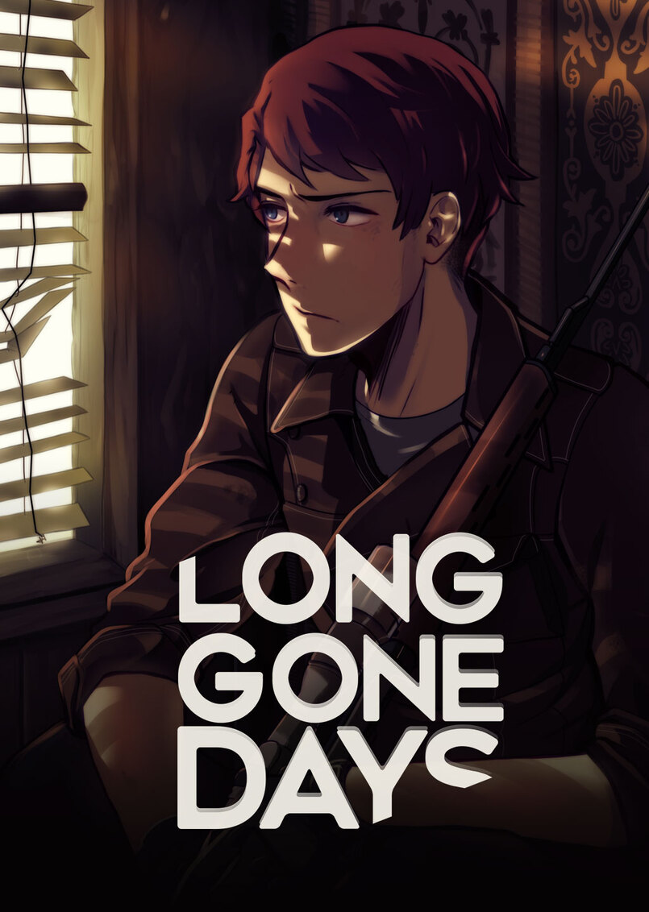

Long Gone Days
Long Gone Days
Details
|  | |
| Playtime | Not Played |
| Last Activity | Never |
| Added | 4/12/2022 22:47:37 |
| Modified | 5/3/2022 21:01:47 |
| Completion Status | $Check Out |
| Library | Itch.io |
| Source | itch.io |
| Platform | PC (Windows) |
| Release Date | 5/13/2016 |
| Community Score | 70 |
| Critic Score | 70 |
| User Score | |
| Genre | RPG Visual Novel |
| Developer | BURA |
| Publisher | BURA |
| Feature | Single Player |
| Links | Steam Official Website Itch Discord |
| Tag | [EMT] Logo Missing |
Description
Short Description
Long Gone Days is a 2D modern-day military RPG set in our current times, with a focus on language and cultural barriers, inspired by classic dystopian literature and visual novels.

After being deployed to his first mission, Rourke leaves The Core's base for the very first time, only to discover the dark truth about the operation he's part of and the consequences of deserting an inescapable war.
With no place to call home now, he must prevent the war from spreading any further, forming strong bonds along the way that will forever change his life.

- Communication is Key: As Long Gone Days is set in the real world, you'll encounter several language barriers. Recruit interpreters in order to communicate with others.
- Keep Morale High: Choose dialogue options wisely as they impact your party members' Morale, affecting how they perform during battles. While doing so, keep in mind every character has different personality traits and motivations.
- Sniper Mode: Long Gone Days has two battle systems. Using Rourke's rifle, spot your enemies and take down your targets.
- No Random Encounters: Long Gone Days features front-view turn-based battles with body-targeting system, and every battle is directly related to the plot.
Frequently Asked Question
Q: Can I do a Let's Play/Review/Stream of the demo?
A: Sure, we'd be honored. For reviews, you can also use the information/pictures from the Press Kit.
Read the entire FAQ here.
Contact
Inquiries - info@bura.cl
FAQ - http://longgonedays.com/faq
Web - longgonedays.com
Discord - discord.gg/longgonedays
Twitter - twitter.com/lgdays
Tumblr - lgdays.tumblr.com
Facebook - facebook.com/longgonedaysgame